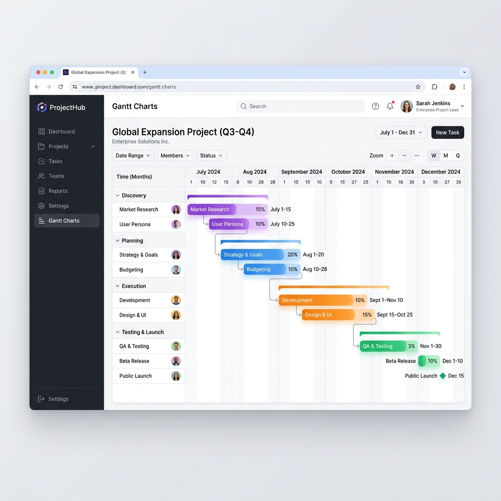

Welcome to Project Monitoring Tool
The definitive continuous-refinement PMO dashboard for MSIL.

What is Project Monitoring Tool?
Project Monitoring Tool is a premium, web-based Project Management Office (PMO) dashboard designed explicitly for tracking MSIL projects through their Innovation Level (IL) lifecycle.
With Project Monitoring Tool, managers, PICs, and executives have a single source of truth for every internal project—eliminating scattered Excel sheets and manual email updates.
Key Features
- Interactive Gantt Tracking: Instantly visualize project timelines mapped to today's date.
- One-Click Export: Export polished PowerPoint (PPTX), Excel, or Image Snapshots for executive meetings.
- Role-Based Access: Secure system tailored for Admins, DPMs, SICs, Team Leads, PICs, and Viewers.
- AI Assistant: A built-in Groq-powered AI chat to help summarize project data and draft communications.
Getting Started: Use the navigation on the left to learn how to operate different modules of the Project Monitoring Tool system.
Next: Main Dashboard & Gantt →